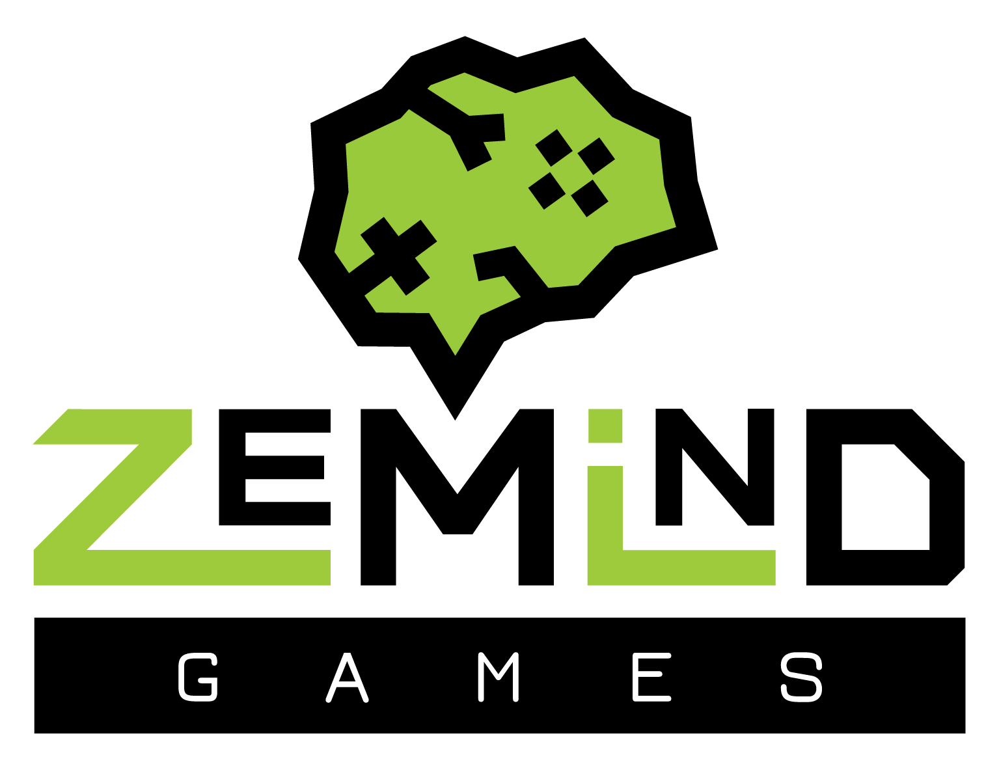
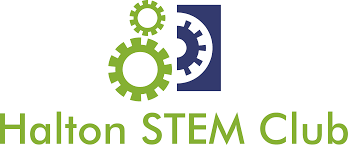
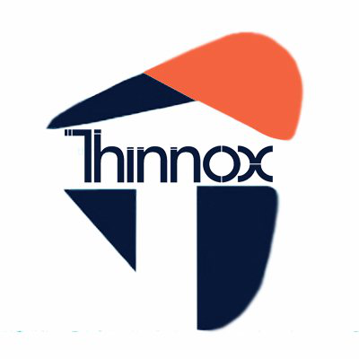
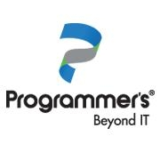

Full Career History
14+ years of professional development experience across engineering, systems architecture, and leadership.
Lead Unity Developer
 Anime Universe
Anime Universe
Leading the Unity development division, contributing to the technical foundation of the platform from early-stage architecture through production. I coordinate the Unity team and collaborate closely with product, design, and art departments.
- Flip Frame Ninjas: Leading development of an endless runner, driving design, system architecture, gameplay implementation, and backend services.
Founder & Tech Leader
 Boldreams
Boldreams
Founder of Boldreams, an indie-focused game development studio providing full-cycle development and technical consulting for international clients. The studio specializes in scalable multiplayer systems, transactional gaming platforms, and service-based game development.
- Swipe Kings: Skill-based competitive mobile game featuring real-time matchmaking and progression systems designed for scalable multiplayer environments.
Lead Unity Developer
 Suprema Gaming
Suprema Gaming
Architected and delivered large-scale multiplayer 2D games using Unity and C#. Integrated real-time networking with Colyseus and Pomelo, optimizing synchronization for thousands of concurrent users.
- Rodeo: Large-scale multiplayer betting game where thousands of players wager on AI-driven poker duels.
- Poker App: Modular multiplayer poker platform for real-time matches, custom clubs, and table creation, with union systems connecting global players.
Lead Unity Developer

ZeMind StudiosLed cross-functional development team in creating mobile and console applications, driving projects from concept through delivery. Designed and implemented gameplay systems and mechanics in Unity (C#) across iOS, Android, and console platforms.
- Courting Glory: Free-to-play champion-based deck builder fighting game utilizing Web3 technology.
- Rawmen: A radical 2-8 player multiplayer third-person arena shooter for Xbox, PlayStation, Switch and Steam.
- Hoame: A 360 mobile mindfulness application offering elevated on-demand experiences.
Unity VR Developer
 Luxsonic Technologies Inc.
Luxsonic Technologies Inc.
Developed Unity-based VR training and assessment systems for medical personnel, emphasizing clinical realism, VR UX best practices, and interaction design. Delivered cross-platform VR solutions using OpenXR and WaveXR.
- Microbiology: Full lab simulation including PPE, sterilization, pathogen handling.
- VAPOC: Emergency responder simulation featuring dynamic patient interactions.
- Blood Transfusion: Complete transfusion process simulator with procedural verification.
Unity game programing teacher

Halton STEM ClubPlanned and organized semi-private classes for Unity3D game development and C# programming, catering to students from grades 6 to 10. Designed course materials and activities to enhance understanding of 3D animation and game design principles.
Unity game programing teacher
 Wells Academy
Wells Academy
Planned and organized semi-private classes for Unity3D game development and C# programming, catering to students from grades 6 to 10. Facilitated hands-on learning experiences, promoting collaboration and creativity.
Unity game programing teacher

Thinnox 360Planned and instructed Unity3D game development, C# programming, and 3D animation classes for groups of up to 12 students. Developed and implemented curriculum focused on electronic circuits and game design.
System Analyst Developer

ProgrammersDeveloped and maintained front-end modules for automated medical survey systems, ensuring code quality and reliability. Managed database architecture, ensuring efficient data handling and system functionality.
Database Consultant
GRJ SoluçõesFirst point of contact for Database improvements and management. Implementing and fixing features in several marketing and business software using WAMP.
System Analyst Developer
Hewlett-PackardManaged and monitored the performance of five critical systems, ensuring operational functionality and reliability. Conducted comprehensive testing and maintenance of database management systems and bank applications.
System Analyst Developer
 CAST
CAST
Developing several governmental and federal applications and web pages using C# MVC5.
Full Stack Developer
Líder Telecom Ltda.Led a team in various internal projects for the company, improving the quality of the calls answered by the telecom operators and the overall work quality of employees. Released 5 applications used internally by 3000+ employees.